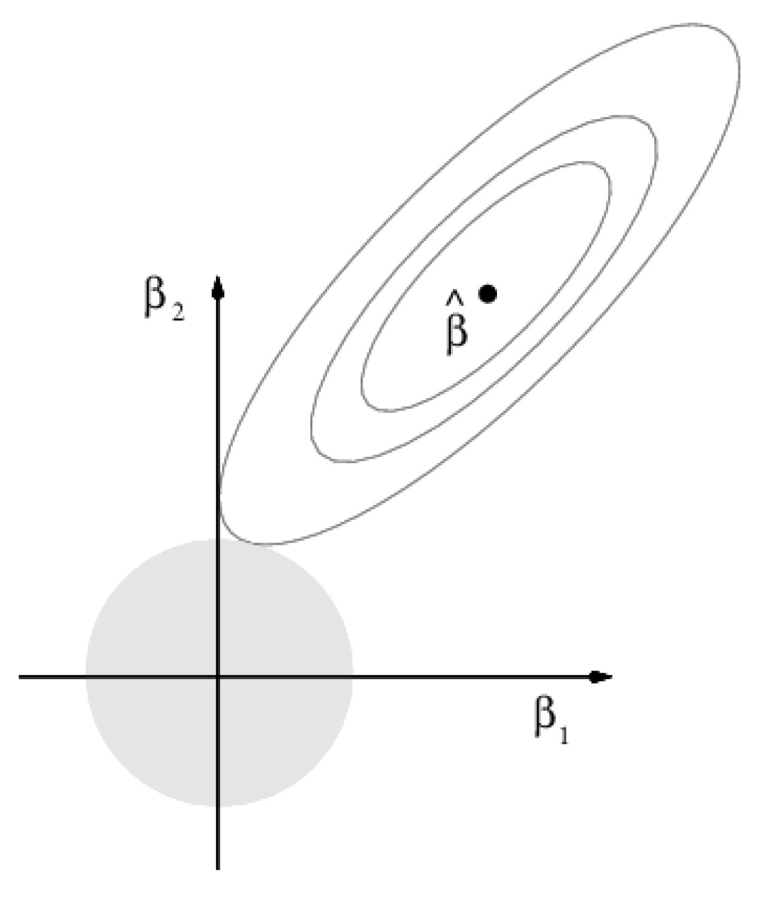
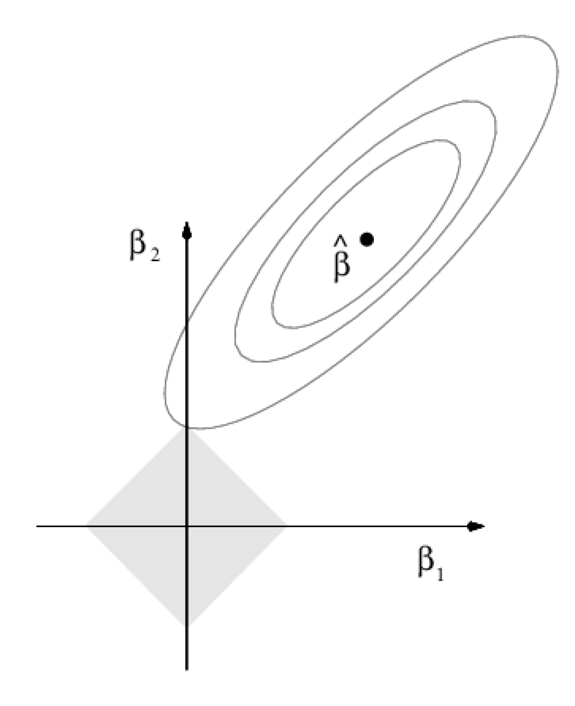

MA8701 Advanced methods in statistical inference and learning
Week 4 (L7+L8): Shrinkage - ridge and lasso in the linear model
Shrinkage
Literature
[ELS] The Elements of Statistical Learning: Data Mining, Inference, and Prediction, Second Edition (Springer Series in Statistics, 2009) by Trevor Hastie, Robert Tibshirani, and Jerome Friedman. Ebook. Chapter 3.2 and 3.4.1-3.4.3.
[HTW] Hastie, Tibshirani, Wainwrigh: “Statistical Learning with Sparsity: The Lasso and Generalizations”. CRC press. Ebook. Chapter 1, 2.1-2.3,2.5.
and for the interested student
- Wessel N. van Wieringen: Lecture notes on ridge regression (We will refer to this note as WNvW below.)
Some figures are taken from An Introduction to Statistical Learning, with applications in R (Springer, 2013) with permission from the authors: G. James, D. Witten, T. Hastie and R. Tibshirani.
What is in a name?
This part of the course could have been called:
- “Regularized linear and generalized linear models”
- “Penalized maximum likelihood estimation”
- and also “Sparse models”,
but it is called “Shrinkage and regularizataion in LM and GLM”.
Focus is on generalized linear models, but we will also consider shrinkage in the next parts of this course (then for “more complex” method).
Question: in linear models (linear regression, generalized linear regression) we mainly work with methods where parameter estimates are unbiased - but might have high variance and not give very good prediction performance overall. Can we use penalization (shrinkage) to produce parameter estimates with some bias but less variance, so that the prediction performance is improved?
We will look at different ways of penalization (which produces shrunken estimators) - mainly what is called ridge and lasso methods.
Ridge is not a sparse method, but lasso is. In sparse statistical models a small number of covariates play an important role.
HTW (page 2): Bet on sparsity principle: Use a procedure that does well in sparse problems, since no procedure does well in dense problems.
Shrinkage (penalization, regularization) methods are especially suitable in situations where we have multi-collinearity and/or more covariates than observations \(N<<p\). Two examples are
- in medicine with genetic data, where the number of patient samples is less than the number of genetic markers studied,
- in analysis of text (more to come in L3)
Linear models
(ELS 3.2, HTW Ch 2.1)
We will only consider linear models now, and move to generalized linear models next week.
Set-up
Random response \(Y\) and \(p\)-dimensional (random) covariates \(X\).
Training data: \(N\) (independent) observations: \((y_i,x_i)\), where \(x_i\) is a column vector with \(p\) covariates (features).
Linear regression model
(ELS 3.2)
Additive noise model \[ Y=f(X)+\varepsilon\] with \(\text{E}(\varepsilon)=0\) and \(\text{Var}(\varepsilon)=\sigma^2\).
With squared loss, we remember that the optimal \(f(X)=\text{E}(Y \mid X)\).
Linear regression model - we assumes that \[f(X)=\beta_0+\sum_{j=1}^p X_{j}\beta_j \] is linear in \(X\), or that is a good approximation.
The unknown parameters are the regression coefficients \(\beta_0,\ldots,\beta_p\) and the error variance \(\sigma^2_{\varepsilon}\).
From TMA4267 we know that if \((X,Y)\) is jointly multivariate normal, then the conditional distribution of \(Y\mid X\) has mean that is linear in \(X\) and variance that is independent of \(X\). Brush-up: See classnotes page 8.

Covariates
The covariates \(X\) can be both quantitative or qualitative, be made of basis expansions or interactions - and more. For qualitative covariates often a dummy variable coding is used. Brush-up: See TMA4315 GLM Module 2.
For now we don´t say so much more, but later we want the covariates to be standardized and the reponse to be centered.
The classical linear model and least squares estimation
First version
For the classical linear model we assume
\[ Y_i=\beta_0+\sum_{j=1}^p X_{j}\beta_j+\varepsilon_i\] with \(\text{E}(\varepsilon_i)=0\) and \(\text{Var}(\varepsilon_)=\sigma^2_{\varepsilon}\), and independence of errors \(\varepsilon_j,\varepsilon_i\).
Regression parameters \(\beta=(\beta_0,\beta_1,\ldots,\beta_p)\in \Re^{(p+1)}\).
We will use the word linear predictor \(\eta(x_i)=\beta_0+\sum_{j=1}^p x_{ij}\beta_j\), for the linear combination in the parameters \(\beta\).
The least squares estimator for the parameters \(\beta\) is found by minimizing the squared-error loss:
\[ \text{minimize}_{\beta} \{ \sum_{i=1}^N (y_i-\beta_0-\sum_{j=1}^p x_{ij}\beta_j)^2\}\]
Second version
This can also be written with vectors and matrices for the \(i=1,\ldots,N\) observations.
\[{\bf Y=X \boldsymbol{\beta}}+{\bf\varepsilon}\] where \({\bf Y}\) is a \(N \times 1\) random column vector, \({\bf X}\) a \(N \times (p+1)\) design matrix with row for observations and columns for covariates, and \({\bf{\varepsilon}}\) \(N \times 1\) random column vector
The assumptions for the classical linear model is:
\(\text{E}(\bf{\varepsilon})=\bf{0}\).
\(\text{Cov}(\varepsilon)=\text{E}(\varepsilon \varepsilon^T)=\sigma^2\bf{I}\).
The design matrix has full rank, \(\text{rank}({\bf X})=(p+1)\).
The classical normal linear regression model is obtained if additionally
- \(\varepsilon\sim N_n(\bf{0},\sigma^2\bf{I})\) holds.
For random covariates these assumptions are to be understood conditionally on \(\bf{X}\).
For derivation of the least squares estimator \(\hat{\beta}\) see TMA4268 Module 3 and links therein.
The same results are found using likelihood theory, if we assume that \(Y\sim N\). See TMA4315 GLM Module 2. Both methods are written out in these class notes from TMA4267/8.
The squared error loss to be minimized can be written \[({\bf Y}-{\bf X}{{\beta}})^T({\bf Y}-{\bf X}{{\beta}})\] Differensiation with respect to the unknown parameter vector, and equating to zero leads to the normal equations.
\[ {\bf X}^T{\bf X}{\beta}= {\bf X}^T {\bf Y}\] To give \[ \hat{\beta}_{\text LS}=({\bf X}^T{\bf X})^{-1} {\bf X}^T {\bf Y}\]
Properties of estimators
If we only assume a classical linear model, the mean and covariance of \(\hat{\beta}\) is \(\text{E}(\hat{\beta}_{\text LS})=\beta\) and \(\text{Cov}(\hat{\beta}_{\text LS})=\sigma^2({\bf X}^T{\bf X})^{-1}\).
For the classical normal linear model:
Least squares and maximum likelihood estimator for \({\bf \beta}\): [ _{LS}=({}T{}){-1} {}^T {}] with \(\hat{\beta}_{\text LS}\sim N_{p}(\beta,\sigma^2({\bf X}^T{\bf X})^{-1})\).
Restricted maximum likelihood estimator for \({\bf \sigma}^2\): [ ^2=({}-{}{LS})^T({}-{}{LS})=] with \(\frac{(n-p)\hat{\sigma}^2}{\sigma^2} \sim \chi^2_{n-p}\).
Statistic for inference about \(\beta_j\), \(c_{jj}\) is diagonal element \(j\) of \(({\bf X}^T{\bf X})^{-1}\). [ T_j=t_{n-p-1}]
The Gauss-Markov theorem
(ELS 3.2.2)
The Gauss-Markov theorem is the famous result stating: the least squares estimators for the regression parameters \(\beta\) have the smallest variance among all linear unbiased estimators.
For simplicity, we look at a linear combination of the parameters, \(\theta=a^T \beta\), with estimator \(\hat{\theta}=a^T \hat{\beta}=a^T ({\bf X}^T{\bf X})^{-1} {\bf X}^T {\bf Y}\). Observe that the estimator is linear in the response \({\bf Y}\).
Q: why is a linear combination of interest? What about a prediction of the response at covariate \(x_0\)? It would be \(f(x_0)=x_0^T \beta\), a linear combination of the \(\beta\) elements.
If we assume that the linear model is correct, then \(\hat{\theta}\) is an unbiased estimator of \(\theta\), because \(\text{E}(a^T \hat{\beta})=a^T \text{E}(\hat{\beta})=a^T\beta=\theta\).
According to the Gauss-Markov theorem: if we have another estimator \(\tilde{\theta}=c^T{\bf Y}\) that is unbiased for \(\theta\) then it must have a larger variance than the LS-estimator:
\[\text{Var}(\hat{\theta})=\text{Var}(a^T \hat{\beta})\le \text{Var}(c^T{\bf Y})=\text{Var}(\tilde{\theta})\]
In Exercise ELS 3.3a we prove the Gauss-Markov theorem based on this set-up (least squares estimator of a linear combination \(a^T\beta\)).
Proof for the full parameter vector \(\beta\) (not only the scalar linear combination), requires a bit more work (it is ELS exercise 3.3b if you want to try).
Comparing variances of estimators
It is not hard to check that an estimator (for example \(p\times 1\) column vector) is unbiased (in each element).
But, what does it mean to compare the variance (covariance matrix) of two estimators of dimension \(p \times 1\)?
In statistics a “common” strategy is to consider all possible linear combinations of the elements of the parameter vector, and check that the variance of estimator \(\hat{\beta}\) is smaller (or equal to) the variance of another estimator \(\tilde{\beta}\).
This is achieved by looking at the difference between the covariance matrices \(\text{Cov}(\tilde{\beta})-\text{Cov}(\hat{\beta})\). If the difference is a positive semi-definite matrix, then every linear combination of \(\hat{\beta}\) will have a variance that is smaller or equal to the variance of the corresponding linear combination for \(\tilde{\beta}\).
Why is this correct?
Assume we want to see if \(\text{Var}(c^T\tilde{\beta})\ge \text{Var}(c^T\hat{\beta})\) for any (nonzero) vector \(c\).
We know that \(\text{Var}(c^T\hat{\beta})=c^T \text{Cov}(\hat{\beta})c\) and \(\text{Var}(c^T\tilde{\beta})=c^T \text{Cov}(\tilde{\beta})c\).
We then consider \[\text{Var}(c^T\tilde{\beta})- \text{Var}(c^T\hat{\beta})=c^T(\text{Cov}(\tilde{\beta})-\text{Cov}(\hat{\beta}))c\]
If \(\text{Cov}(\tilde{\beta})-\text{Cov}(\hat{\beta})\) is positive semi-definite then the variance difference will be equal or greater than 0 - by the definition of a positive semi-definite matrix.
This is also referred to as: The variance of \(\tilde{\beta}\) exceeds in a positive definite ordering sense that of \(\hat{\beta}\), and written \(\text{Var}(\tilde{\beta}) \succeq \text{Var}(\hat{\beta})\). (Remark: here both \(\text{Var}\) and \(\text{Cov}\) is used as notation for the variance-covariance matrix.)
Mean squared error
We want to study the mean squared error for the (scalar) estimator \(\tilde{\theta}\).
From the previous section we know that \(\tilde{\theta}\) could for example be the prediction at at covariate \(x_0\)? It would be \(\tilde{\theta}=f(x_0)=x_0^T \beta\), and then \(\text{MSE}(\tilde{\theta})\) would be an interesting quantity.
\[\text{MSE}(\tilde{\theta})= \text{E}[(\tilde{\theta}-\theta)^2]=\text{Var}(\tilde{\theta})+[\text{E}(\tilde{\theta})-\theta]^2\]
The last transition: add and subtract \(\text{E}(\tilde{\theta})\).
The first term is the variance, and the second the squared bias. (There is no irredusible error since we are not considering a new observation, but we may of cause do that and add the irreducible error.)
We know that for unbiased estimators (bias equal to \(0\)), the MSE will be the smallest for the LS-estimator. This means that if we want to try to get a lower MSE we can´t do that with an unbiased estimator!
This is a bit unusual to many of us, since we from our first course in statistics have been told about the glory of unbiased estimators!
But, if we shrink some of the regression coefficients towards 0, or set them equal to 0, then we get a biased estimate for the regression parameters. Biased estimates are the core of this part of the course. We may want to pay the price of a biased estimate with the gain of decreased variance, so that the MSE for might get lower than for the LS-estimate.
Preparing for shrinkage
Standarization of covariates
For shrinkage methods it is common to standardize the covariates, where standardize means that
- the covariates are first centered, that is \(\frac{1}{N}\sum_{i=1}^N x_{ij}=0\) for all \(j=1,\ldots, p\),
- and then scaled to unit variance, that is \(\frac{1}{N}\sum_{i=1}^N x^2_{ij}=1\).
This is done in practice by first subtracting the mean and then dividing by the standard deviation. The standarization is only needed if the covariates are of different units or scales, because for shrinkage we will (for some of the method) penalize the optimization with the same penalty for all covariates.
Centering covariates and response
The intercept term \(\beta_0\) will not be the aim for shrinkage in shrinkage methods.
To make the presentation of the shrinkage methods easier to explain and write down, HTW use the common trick to center all covariates and the response.
By centering the covariates and the response we may imagine moving the centroide of the data to the origin, where we do not need an intercept to capture the best linear regression hyperplane.
When both covariates and responses are centred the LS estimate for the intercept \(\beta_0\) will be \(\hat{\beta}_0=0\).
If interpretation is to be done for uncentred data we may calculate the estimated \(\beta_0\) for uncentered data from the estimated regression coefficients and the mean of the original covariates and respons.
When covariates and responses are centred HTW remove \(\beta_0\) from the regression model for the shrinkage methods. We will also do that.
Group discussion:
Why is the LS estimate \(\hat{\beta}_0=0\) for centred covariates and centred response in the multiple linear regression model?
Explain what is done in the analysis of the Gasoline data directly below.
Choose yourself if you want to focus 1 or 2.
Gasoline data
Consider the multiple linear regression model, with response vector \(\bf{Y}\) of dimension \((N \times 1)\) and \(p\) covariates and intercept in \(\bf{X}\) \((N \times p+1)\).
\[\begin{align} \bf{Y} = \bf{X}\bf{\beta} + \bf{\varepsilon} \end{align}\] where \(\bf{\varepsilon}\sim N(\bf{0},\sigma^2\bf{I})\).
When gasoline is pumped into the tank of a car, vapors are vented into the atmosphere. An experiment was conducted to determine whether \(Y\), the amount of vapor, can be predicted using the following four variables based on initial conditions of the tank and the dispensed gasoline:
TankTemptank temperature (F)GasTempgasoline temperature (F)TankPresvapor pressure in tank (psi)GasPresvapor pressure of gasoline (psi)
The data set is called sniffer.dat.
We start by standardizing the covariates (make the mean 0 and the variance 1), we also center the response. From the scatter plots of the response and the covariates - would you think an MLR is suitable?
Code
ds <- read.table("./sniffer.dat",header=TRUE)
x <- apply(ds[,-5],2,scale)
y <- ds[,5]-mean(ds[,5])
print(dim(x))[1] 32 4Code
dss=data.frame(y,x)
ggpairs(dss)
Calculate the estimated covariance matrix of the standardized covariates. Do you see a potential problem here?
Code
cov(dss) y TankTemp GasTemp TankPres GasPres
y 87.790323 7.7399536 8.5202970 8.1505120 8.6325694
TankTemp 7.739954 1.0000000 0.7742909 0.9554116 0.9337690
GasTemp 8.520297 0.7742909 1.0000000 0.7815286 0.8374639
TankPres 8.150512 0.9554116 0.7815286 1.0000000 0.9850748
GasPres 8.632569 0.9337690 0.8374639 0.9850748 1.0000000We have fitted a MLR with all four covariates. Explain what you see.
Code
full <- lm(y~.,dss)
summary(full)
Call:
lm(formula = y ~ ., data = dss)
Residuals:
Min 1Q Median 3Q Max
-5.586 -1.221 -0.118 1.320 5.106
Coefficients:
Estimate Std. Error t value Pr(>|t|)
(Intercept) 3.233e-16 4.826e-01 0.000 1.00000
TankTemp -5.582e-01 1.768e+00 -0.316 0.75461
GasTemp 3.395e+00 1.065e+00 3.187 0.00362 **
TankPres -6.274e+00 4.140e+00 -1.515 0.14132
GasPres 1.249e+01 3.859e+00 3.237 0.00319 **
---
Signif. codes: 0 '***' 0.001 '**' 0.01 '*' 0.05 '.' 0.1 ' ' 1
Residual standard error: 2.73 on 27 degrees of freedom
Multiple R-squared: 0.9261, Adjusted R-squared: 0.9151
F-statistic: 84.54 on 4 and 27 DF, p-value: 7.249e-15Code
confint(full) 2.5 % 97.5 %
(Intercept) -0.9902125 0.9902125
TankTemp -4.1852036 3.0688444
GasTemp 1.2093630 5.5812551
TankPres -14.7689131 2.2214176
GasPres 4.5730466 20.4078380Code
ggplot(full, aes(.fitted, .stdresid)) + geom_point(pch = 21) + geom_hline(yintercept = 0,
linetype = "dashed") + geom_smooth(se = FALSE, col = "red", size = 0.5,
method = "loess") + labs(x = "Fitted values", y = "Standardized residuals",
title = "Fitted values vs standardized residuals", subtitle = deparse(full$call))Code
ggplot(full, aes(sample = .stdresid)) + stat_qq(pch = 19) + geom_abline(intercept = 0,
slope = 1, linetype = "dotted") + labs(x = "Theoretical quantiles",
y = "Standardized residuals", title = "Normal Q-Q", subtitle = deparse(full$call))Code
ad.test(rstudent(full))
Anderson-Darling normality test
data: rstudent(full)
A = 0.3588, p-value = 0.43Perform best subset selection using Mallows \(C_p\) (equivalent to AIC) to choose the best model.
Code
bests <- regsubsets(x,y)
sumbests <- summary(bests)
print(sumbests)Subset selection object
4 Variables (and intercept)
Forced in Forced out
TankTemp FALSE FALSE
GasTemp FALSE FALSE
TankPres FALSE FALSE
GasPres FALSE FALSE
1 subsets of each size up to 4
Selection Algorithm: exhaustive
TankTemp GasTemp TankPres GasPres
1 ( 1 ) " " " " " " "*"
2 ( 1 ) " " "*" " " "*"
3 ( 1 ) " " "*" "*" "*"
4 ( 1 ) "*" "*" "*" "*" Code
which.min(sumbests$cp) [1] 3Model after best subset selection.
Code
red <- lm(y~GasTemp+TankPres+GasPres,data=dss)
summary(red)
Call:
lm(formula = y ~ GasTemp + TankPres + GasPres, data = dss)
Residuals:
Min 1Q Median 3Q Max
-5.6198 -1.2934 -0.0496 1.4858 4.9131
Coefficients:
Estimate Std. Error t value Pr(>|t|)
(Intercept) 8.390e-16 4.748e-01 0.000 1.00000
GasTemp 3.290e+00 9.951e-01 3.306 0.00260 **
TankPres -7.099e+00 3.159e+00 -2.247 0.03272 *
GasPres 1.287e+01 3.607e+00 3.568 0.00132 **
---
Signif. codes: 0 '***' 0.001 '**' 0.01 '*' 0.05 '.' 0.1 ' ' 1
Residual standard error: 2.686 on 28 degrees of freedom
Multiple R-squared: 0.9258, Adjusted R-squared: 0.9178
F-statistic: 116.4 on 3 and 28 DF, p-value: 6.427e-16Code
confint(red) 2.5 % 97.5 %
(Intercept) -0.9725378 0.9725378
GasTemp 1.2513019 5.3281126
TankPres -13.5706954 -0.6270544
GasPres 5.4823283 20.2586338Ridge regression
(ELS 3.4.1)
Ridge regression is also called “Tikhonov regularization”.
We consider the classical linear model set-up, as for the LS estimation, but now we look at shrinking the coefficients towards 0 to construct biased estimators - and then “hope” that this also has made the variances decrease.
We will not shrink the intercept \(\beta_0\), because then the this will depend on the origin of the response.
The ridge solution is dependent on the scaling of the covariates, and usually we work with standardized covariates and also with centered response.
Minimization problem
Budget version
We want to constrain the size of the estimated regression parameters, so we give the sum of squared regression coefficients a budget \(t\).
Minimize the squared error loss
\[ \sum_{i=1}^N (y_i-\beta_0-\sum_{j=1}^p x_{ij}\beta_j )^2 \] subject to \(\sum_{j=1}^p \beta_j^2 \le t\). The solution is called \(\hat{\beta}_{\text{ridge}}\).

Penalty version
\[ \hat{\beta}_{\text{ridge}}= \text{argmin}_{\beta}[\sum_{i=1}^N (y_i-\beta_0-\sum_{j=1}^p x_{ij}\beta_j )^2 + \lambda \sum_{j=1}^p \beta_j^2]\] where \(\lambda \ge 0\) is a complexity (regularization, penalty) parameter controlling the amount of shrinkage.
- The larger \(\lambda\) the greater the amount of shrinkage
- The shrinkage is towards 0
This version of the problem is also called the Lagrangian form.
The budget and penalty minimization problems are equivalent ways to write the ridge regression and there is a one-to-one correspondence between the budget \(t\) and the penalty \(\lambda\).
Parameter estimation
As explained, centred covariates and responses are used - and the intercept term is removed from the model. Then NOW \({\bf X}\) does not include a column with 1s and has dimension \(N \times p\).
Penalty criterion to minimize
\[ ({\bf y}-{\bf X}\beta)^T ({\bf y}-{\bf X}\beta)+ \lambda \beta^T \beta \] This can be rewritten as
\[ {\bf y}^T{\bf y}-2{\bf y}^T{\bf X}\beta+\beta^T({\bf X}^T{\bf X}+\lambda {\bf I})\beta\]
Proceeding along the lines as done with the LS estimation, we get the (new) normal equations
\[ ({\bf X}^T{\bf X}+\lambda {\bf I})\beta= {\bf X}^T {\bf Y}\]
and the estimator:
\[ \hat{\beta}_{\text{ridge}}=({\bf X}^T{\bf X}+\lambda {\bf I})^{-1} {\bf X}^T {\bf Y}\]
Observe that the solution adds a positive constant \(\lambda\) to the diagonal of \({\bf X}^T{\bf X}\), so that even if \({\bf X}^T{\bf X}\) does not have full rank then the problem is non-singular and we can invert \(({\bf X}^T{\bf X}+\lambda {\bf I})\).
When ridge regression was introduced in statistics in the 1970s this (avoiding non-singuarlity) was the motivation.
When \(N<p\) then the design matrix will have rank less than the number of covariates, and the LS estimate does not exist.
The case when two or more covariates are perfectly linearly dependent is called super-collinearity (accoring to WNvN).
Gasoline continued
Code
start=glmnet(x=x,y=y,alpha=0)
autolambda=start$lambda # automatic choice of lambda had smallest lambda 0.96 - but I added more small values to also be able to see that LS-solution is for lambda=0
newlambda=c(autolambda,0.5,0.3,0.2,0.1)
fit.ridge=glmnet(x,y,alpha=0,lambda=newlambda)
plot(fit.ridge,xvar="lambda",label=TRUE)Code
#plot(fit.ridge,xvar="norm",label=TRUE)Model selection
To choose the optimal penalty parameter \(\lambda\) cross-validation is the default method in use. ELS recommends to either
- choose the \(\lambda\) corresponding to the smallest CV error
- or first find the \(\lambda\) with the smallest CV-error, and then record the estimated standard error of the CV-error at this value, and then choose the largest \(\lambda\) such that the CV error is still within one standard error of the minimum. We choose the largest because we want the less flexible model.
The R package glmnet (by Hastie et al) has default \(K=10\) fold cross-validation with the function cv.glmnet where alpha=0 gives the ridge penalty.
Gasoline continued
Explain what you see!
Code
cv.ridge=cv.glmnet(x,y,alpha=0,lambda=newlambda)
print(paste("The lamda giving the smallest CV error",cv.ridge$lambda.min))[1] "The lamda giving the smallest CV error 0.1"Code
print(paste("The 1sd err method lambda",cv.ridge$lambda.1se))[1] "The 1sd err method lambda 2.59474341839969"Code
plot(cv.ridge)
Code
# use 1sd error rule default
plot(fit.ridge,xvar="lambda",label=TRUE);
abline(v=log(cv.ridge$lambda.1se));Code
coef(cv.ridge)5 x 1 sparse Matrix of class "dgCMatrix"
s1
(Intercept) -2.205724e-15
TankTemp 8.374088e-01
GasTemp 3.432180e+00
TankPres 1.610137e+00
GasPres 2.645772e+00Code
full$coeff (Intercept) TankTemp GasTemp TankPres GasPres
3.232869e-16 -5.581796e-01 3.395309e+00 -6.273748e+00 1.249044e+01 Code
red$coeff (Intercept) GasTemp TankPres GasPres
8.390059e-16 3.289707e+00 -7.098875e+00 1.287048e+01 Properties of the ridge estimator
Mean
Derive the mean of the ridge estimator.
What happens if:
- \(\lambda \rightarrow 0\)
- \(\lambda \rightarrow \infty\)
Exam problem 12 (TMA4268, 2019) with solutions Alternatively: Wessel N. van Wieringen: Lecture notes on ridge regression, section 1.4
Covariance
Derive the covariance of the ridge estimator.
What happens if:
- \(\lambda \rightarrow 0\)
- \(\lambda \rightarrow \infty\)
(in our centered model without intercept)
Same resources as above.
Distribution
For the normal linear model
\[\hat{\beta}(\lambda)_{\text{ridge}} \sim N \{ (\mathbf{X}^T \mathbf{X} + \lambda \mathbf{I}_{p})^{-1} \mathbf{X}^T \mathbf{X} \, \beta,\] \[\sigma^2 ( \mathbf{X}^T \mathbf{X} + \lambda \mathbf{I}_{p} )^{-1} \mathbf{X}^T \mathbf{X} ( \mathbf{X}^T \mathbf{X} + \lambda \mathbf{I}_{p} )^{-1} \}. \]
Is ridge “better than” LS?
We may prove that the variance of the ridge estimator is smaller or equal the variance of the LS estimator. See exercise “Variance of ridge compared to LS”, where we need to look at differences of covariance matrices and check for positive semi-definite matrix.
In addition it is possible to prove that given a suitable choice for \(\lambda\) the ridge regression estimator may outperform the LS estimator in terms of the MSE. See WNvW Section 1.4.3 for the full derivation.
The optimal choice of \(\lambda\) depends both the true regression parameters and the error variance. This means that the penalty parameter should be chosen in a data-driven fashion.
Insight based on SVD
Singular value decomposition (SVD)
Let \({\bf X}\) be a \(N \times p\) matrix.
SVD is a decomposition of a matrix \({\bf X}\) into a product of three matrices \[{\bf X}={\bf U}{\bf D}{\bf V}^T.\] \({\bf D}\) is an \((N \times p)\)-dimensional block matrix. Its upper left block is a \((\mbox{rank}(\mathbf{X}) \times \mbox{rank}(\mathbf{X}))\)-dimensional digonal matrix with the singular values on the diagonal. The remaining blocks, zero if \(p=N\). The singular values are equal \(\sqrt{\mathrm{eigenvalues}({\bf X}{\bf X}^T})=\sqrt{\mathrm{eigenvalues}({\bf X}^T{\bf X})}\).
\(\mathbf{U}\) is an \((n \times n)\)-dimensional matrix with columns containing the left singular vectors (denoted \(\mathbf{u}_i\)), that is, the eigenvectors of \({\bf X}{\bf X}^T\)
\(\mathbf{V}\) is a \((p \times p)\)-dimensional matrix with columns containing the right singular vectors (denoted \(\mathbf{v}_i\)), that is, the eigenvectors of \({\bf X}^T{\bf X}\).
The columns of \(\mathbf{U}\) and \(\mathbf{V}\) are orthogonal: \(\mathbf{U}^{\top} \mathbf{U} = \mathbf{I}_{N} = \mathbf{U}\mathbf{U}^T\) and \(\mathbf{V}^T \mathbf{V}= \mathbf{I}_{p} = \mathbf{V}\mathbf{V}^T\).
Following the derivation of WNvW page 11-12:
- If \(n>p\) and the rank of \({\bf X}\) is \(p\), then the LS estimator \(\hat{\beta}_{\text{LS}}\) can be written
\[\hat{\beta}_{\text{LS}}= \mathbf{V}(\mathbf{D}^T \mathbf{D})^{-1} \mathbf{D}^T \mathbf{U}^T \mathbf{Y}\]
- The ridge estimator \(\hat{\beta}_{\text{ridge}}\)
\[ \hat{\beta}_{\text{ridge}}=\mathbf{V} (\mathbf{D}^T \mathbf{D} + \lambda \mathbf{I})^{-1} \mathbf{D}^T \mathbf{U}^T \mathbf{Y}\]
- The principal component regression based on the first \(k\) principal components
\[ \hat{\beta}_{\text{PCR}} = \mathbf{V}_{k} (\mathbf{I}_{kp} \mathbf{D}^T \mathbf{D}\mathbf{I}_{pk})^{-1} \mathbf{I}_{kp} \mathbf{D}^T \mathbf{U}^T \mathbf{Y}\]
here \(\mathbf{V}_{k}\) contains the first \(k\) right singular vectors as columns, and \({\bf I}_{kp}\) is obtained by \({\bf I}_p\) by removing the last \(p-k\) columns.
Connection to principal component analysis: The estimated covariance matrix for centred covariates is \(\frac{1}{N}{\bf X}^T{\bf X}\). The eigenvalues of \({\bf X}^T{\bf X}\) are the squared singular values, \(d^2_j\). The small singular values \(d_j\) correspond to directions in the column space of \({\bf X}\) with small variance, which will be the direction for the last principal components.
The ridge penalties shrinks the direction with the small singular values the most. Principal components thresholds coefficients in the direction with singular values of \({\bf X}\), while ridge regression shrinks the coefficients in these directions.
Alternatively, it is possible to consider the prediction
\[\hat{y}_{\text{LS}}={\bf X}\hat{\beta}_{\text LS}= \cdots = {\bf U}{\bf U}^T {\bf y}\]
\[\hat{y}_{\text{ridge}}={\bf X}\hat{\beta}_{\text ridge}= \cdots = {\bf U}{\bf D}^2({\bf D}^2+\lambda {\bf I}_p)^{-1}{\bf U}^T {\bf y}= \sum_{j=1}^p {\bf u}_j \frac{d_j^2}{d_j^2+\lambda}{\bf u}_j^T {\bf y}\]
Group discussion: What can we conclude from this about what the \(\lambda\) does with each covariate direction?
The effective degrees of freedom
In ELS Ch 7.6 we defined the effective number of parameters (here now referred to as the effective degrees of freedom) for a linear smoother \(\hat{\bf y}={\bf Sy}\) as
\[\text{df}({\bf S})=\text{trace}({\bf S})\]
For ridge regression our linear smoother is \[{\bf H}_{\lambda}={\bf X}({\bf X}^T{\bf X}+ \lambda {\bf I})^{-1}{\bf X}^T\]
\(\text{df}(\lambda)=\text{tr}({\bf H}_{\lambda})=\text{tr}({\bf X}({\bf X}^T{\bf X}+ \lambda {\bf I})^{-1}{\bf X}^T)=\cdots=\sum_{j=1}^p \frac{d_j^2}{d_j^2+\lambda}\)
- \(\lambda=0\) gives \(\text{df}(\lambda)=p\)
- \(\lambda \rightarrow \infty\) gives \(\text{df}(\lambda)\rightarrow 0\)
The \(\text{df}(\lambda)\) is sometimes plotted instead of \(\lambda\) on the horisontal axis when model complexity is chosen.
Finally
- When is ridge preferred to LS? When the LS estimates have high variance and many predictors are truly non-zero.
- Ridge is computationally fast.
- Ridge is not very easy to interpret, because all \(p\) predictor are included in the final model.
Lasso
(ELS 3.4.2)
Now we will do what looks at first sight as a small change - we will use a budget on the absolute value insted of squared value - moving from the \(L_2\) to the \(L_1\) norm. But, this will have a large impact on the parameter estimates - both shrinking - and performing model selection (by shrinking all the way down to 0).
Again, we will not shrink the intercept \(\beta_0\), because then the this will depend on the origin of the response, and we will work with standardized covariates and centered response.
Minimization problem
Budget version
We want to constrain the size of the estimated regression parameters, so we give the sum of squared regression coefficients a budget \(t\).
Minimize the squared error loss
\[ \sum_{i=1}^N (y_i-\beta_0-\sum_{j=1}^p x_{ij}\beta_j )^2 \] subject to \(\sum_{j=1}^p \lvert \beta_j\rvert \le t\). The solution is called \(\hat{\beta}_{\text{lasso}}\).

Penalty version
\[ \hat{\beta}_{\text{lasso}}= \text{argmin}_{\beta} [\sum_{i=1}^N (y_i-\beta_0-\sum_{j=1}^p x_{ij}\beta_j )^2 + \lambda \sum_{j=1}^p \lvert \beta_j\rvert ] \] again, \(\lambda \ge 0\) is a complexity (regularization, penalty) parameter controlling the amount of shrinkage.
- The larger \(\lambda\) the greater the amount of shrinkage
- The shrinkage is towards 0
This version of the problem is also called the Lagrangian form.
The budget and penalty minimization problems are equivalent ways to write the ridge regression and there is a one-to-one correspondence between the budget \(t\) and the penalty \(\lambda\).
Small notational difference in the two textbooks
In HTW an extra \(\frac{1}{2N}\) factor is added to the squared error for the ridge and the lasso, which is just for ease of interpretation of a future shrinkage parameter to be included (to make that shrinkage parameter comparable across different sample sizes in the use of cross-validation). The factor does not influence the solution of the minimization of the squared-error loss we consider now.
Parameter estimation
As explained, centred covariates and responses are used - and the intercept term is removed from the model. Then \({\bf X}\) does not include a column with 1s and has dimension \(N \times p\).
The use of the absolute value in the penalty term makes the solution in general non-linear in \(y_i\), and no closed form solution.
If we make the budget \(t\) sufficiently small some of the coefficients will be exactly zero.
If \(t\) is chosen larger than \(t_0=\sum_{j=1}^p \lvert \hat{\beta}_{{\text {LS}},j} \rvert\) the lasso estimates equal the LS estimates.
The nature of the shrinkage is complex, and will be studied later.
In L3 we will look into estimation algorithms for the lasso.
Conditions for a solution to the penalty version
(HTW page 9)
The details are found in HTW Chapter 5 (not on our reading list), but the student familiar with convex analysis, dual problems and Karush-Kuhn-Tucker (KKT) conditions might find Chapter 5 of interest.
Convex analysis theory: necessary and sufficient conditions for a solution to the lasso penalty problem is
\[ \frac{1}{N}\langle {\bf x}_j,{\bf y}-{\bf X}\beta \rangle+\lambda s_j=0 \mbox{ for } j=1,\ldots,p\]
where \(\langle a,b \rangle=a^T b\) denotes the inner product. Each \(s_j\) is an unknow quantity, equal to
- \(\text{sign}(\beta_j)\) if \(\beta_j\neq 0\)
- some value in \([-1,1]\) otherwise (socalled subgradient of the absolute value function).
We may solve this problem in \((\hat{\beta},\hat{s})\), instead of the penalty version.
Orthogonal covariates
This case - explicit solution! New word: soft thresholding”.
Will be written out in class - see classnotes L8

Gasoline continued

5 x 1 sparse Matrix of class "dgCMatrix"
s1
(Intercept) -1.487848e-15
TankTemp .
GasTemp 3.660973e+00
TankPres .
GasPres 4.342993e+00Degrees of freedom
(HTW 2.5)
In ELS Ch 7.6 we defined the effective number of parameters (here now referred to as the effective degrees of freedom) for a linear smoother, and used that for the ridge regression. However, the lasso is not a linear smoother (it is nonlinear in the reponses \(y_i\)).
The lasso is an adaptive fitting procedure, and if our final model has \(k\) covariates that is different from zero, we would not think that the effective degrees of freedom for the lasso is then \(k\). However, it turns out that it is correct to count the number of degrees of freedom by the number of nonzero coefficients.
In ELS Ch 7.6 we also defined the degrees of freedom using the covariance generalization: \[\text{df}(\hat{{\bf y}})=\frac{\sum_{i=1}^N \text{Cov}(\hat{y}_i,y_i)}{\sigma_{\varepsilon}^2}\]
where the covariance is taken over the reponse variables, while the covariates are kept fixed (this formula was developed in connection to the in-sample prediction error).
It has been shown (HTW refer to this at “somewhat miraculously) that with a fixed penalty parameter \(\lambda\) the number of non-zero coefficients \(k_{\lambda}\) is an unbiased estimate for the degrees of freedom.
This is explained by considering that the lasso does not only select predictors (selecting predictors will give an inflated degrees of freedom) - but also shrinks the coefficients relative to the LS estimates. These two forces kind of cancel out.
HTW (page 19): a general proof is difficult, but for an orthogonal design using the fact that the lasso estimates are soft-thresholded versions f the univariate regression coefficients for the othogonal design.
Finally
- When is ridge preferred to LS? When the LS estimates have high variance and many predictors are truly non-zero.
- Ridge is computationally fast.
- Ridge is not very easy to interpret, because all \(p\) predictor are included in the final model.
Neigher ridge or lasso dominates the other in all situations.
Software

We will use the glmnet implementation for R:
For Python there are different options.
- Python glmnet is recommended by Hastie et al.
- scikit-learn (seems to mostly be for regression? is there lasso for classification here?)
Exercises
Gauss-Markov theorem
The LS is unbiased with the smallest variance among linear predictors: ELS exercise 3.3a
Variance of ridge compared to LS
Consider a classical linear model with regression parameters \(\beta\). Let \(\hat{\beta}\) be the LS estimator for \(\beta\) and let \(\tilde{\beta}\) be the ridge regression estimator for \(\beta\). Show that \(\text{Var}(\hat{\beta}) \ge \text{Var}(\tilde{\beta})\).
Ridge regression
This problem is taken, with permission from Wessel van Wieringen, from a course in High-dimensional data analysis at Vrije University of Amsterdam.
a)
Find the ridge regression solution for the data below for a general value of \(\lambda\) and for the simple linear regression model \(Y = \beta_0 + \beta_1 X + \varepsilon\) (only apply the ridge penalty to the slope parameter, not to the intercept). Show that when \(\lambda\) is chosen as 4, the ridge solution fit is \(\hat{Y} = 40 + 1.75 X\).
Data: \(\mathbf{X}^T = (X_1, X_2, \ldots, X_{8})^T = (-2, -1, -1, -1, 0, 1, 2, 2)^T\), and \(\mathbf{Y}^T = (Y_1, Y_2, \ldots, Y_{8})^T = (35, 40, 36, 38, 40, 43, 45, 43)^T\).
b)
The coefficients \(\beta\) of a linear regression model, \(\mathbf{Y} = \mathbf{X} \beta + \varepsilon\), are estimated by \(\hat{\beta} = (\mathbf{X}^\mathrm{T} \mathbf{X})^{-1} \mathbf{X}^\mathrm{T} \mathbf{Y}\). The associated fitted values then given by \(\hat{\mathbf{Y}} = \mathbf{X} \, \hat{\beta} = \mathbf{X} (\mathbf{X}^\mathrm{T} \mathbf{X})^{-1} \mathbf{X}^\mathrm{T} \mathbf{Y} = \mathbf{H} \mathbf{Y}\), where \(\mathbf{H} = \mathbf{X} (\mathbf{X}^\mathrm{T} \mathbf{X})^{-1} \mathbf{X}^\mathrm{T}\). The matrix \(\mathbf{H}\) is a projection matrix and satisfies \(\mathbf{H} = \mathbf{H}^ 2\). Hence, linear regression projects the response \(\mathbf{Y}\) onto the vector space spanned by the columns of \(\mathbf{X}\). Consequently, the residuals \(\hat{\varepsilon}\) and \(\hat{\mathbf{Y}}\) are orthogonal.
Next, consider the ridge estimator of the regression coefficients: \(\hat{\beta}(\lambda) = (\mathbf{X}^\mathrm{T} \mathbf{X} + \lambda \mathbf{I}_{p})^{-1} \mathbf{X}^\mathrm{T} \mathbf{Y}\). Let \(\hat{\mathbf{Y}}(\lambda) = \mathbf{X} \hat{\beta}(\lambda)\) be the vector of associated fitted values.
Show that the matrix \(\mathbf{Q} = \mathbf{X} (\mathbf{X}^\mathrm{T} \mathbf{X} + \lambda \mathbf{I}_{p})^{-1} \mathbf{X}^{\mathrm{T}}\), associated with ridge regression, is not a projection matrix (for any \(\lambda > 0\)). Hint: a projection matrix is idempotent (commonly used in TMA4267).
c)
Show that the ridge fit \(\hat{\mathbf{Y}}(\lambda)\) is not orthogonal to the associated ridge residuals \(\hat{\varepsilon}(\lambda)\) (for any \(\lambda > 0\)).
Lasso estimator for orthogonal covariates
(started on in class - but added separately here, is also found as part of ELS Ex 3.16)
Derive the lasso estimator for \(\beta\) in the case where the covariates are othogonal (and centred and scaled, and response centered so we have no \(\beta_0\)).
Solutions to exercises
Please try yourself first, or take a small peek - and try some more - before fully reading the solutions. Report errors or improvements to Mette.Langaas@ntnu.no.
Resources
Videos in statistics learning with Rob Tibshirani and Daniela Witten, made for the Introduction to statistical learning Springer textbook.
Video from webinar with Trevor Hastie on glmnet from 2019